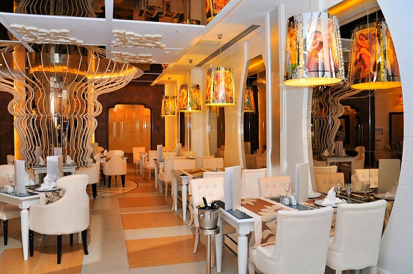
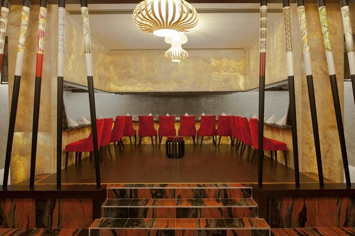
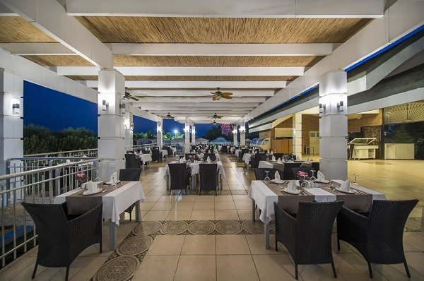
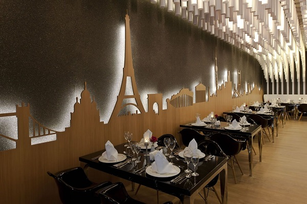
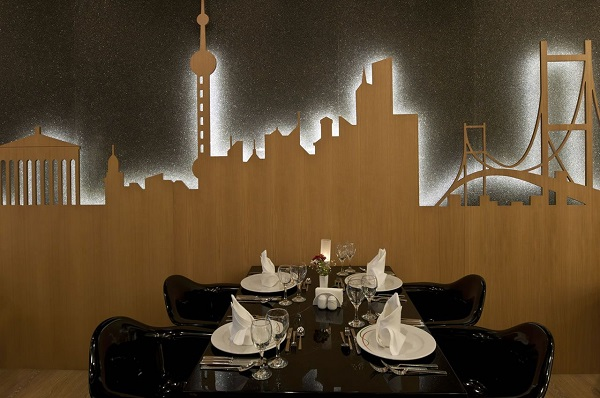
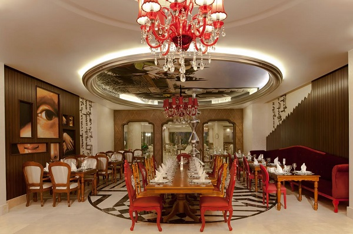

Mia Mensa Restaurant
"Italian Breeze in the Cuisine"
Pastas in various shapes and sizes, delicious pizzas, tasty cheese varieties… If you are an admirer of Italian cuisine, then “Mia Mensa” at Delphin Imperial will be your first stop. Mia Mensa, which serves you between 19.00and 21.00, will appeal your taste buds with its delicious Italian tastes and tasty Italian vines…

Yuka Restaurant
"Far Eastern of Delphin Imperial: Yuka …"
Yuka , receiving its guest with the authentic tastes of Far East cuisine, will become indispensible for you with its special sauces, spices offered in a special harmony with the meals and trace-leaving tastes. If you are addicted to the different tastes of Far East cuisine, especially if you are a sushi lover, you will find the tastes you look for, at Yuka and be impressed with their flavor and presentation…
Yuka Restaurant serves you between 19.00and 21.00

Lalezar Restaurant
"Modern touches on the Traditional Turkish cuisine…"
Lalezar Restaurant, which offers a menu fit for the kings with the Traditional Turkish meals, receives the guests of Delphin Imperial with its elegant and tasty meals. Besides its tastes, good-humored team of Lalezar restaurant, which offers a feast of taste for you with its splendid presentations, will host you like the kings.
Lalezar Restaurant serves you between 19.00and 21.00

Pescador Restaurant
"For the seafood lovers…"
Choice of the guests of Delphin Imperial, who love fish and seafood, will be Pescador Restaurant… You will have a hard time choosing between the options in the menu, where the freshest seafood is turned into a feast of taste. In addition to the special tastes and romance at Pescador Restaurant, you will relieve the tiredness of the day and enjoy the delicious tastes with the service of the good-humored and diligent team …
Pescador Restaurant serves you between 19.00and 21.00
Tequila Restaurant
"Mexican Cuisine…"
How can you help yourself not to admire Mexican cuisine full of rich flavors? This restaurant is for you dear guests who desire to experience the joy of authentic Mexican cuisine through an innovative presentation and who are not afraid of hot food!
Tequila Restaurant serves at 19.00-21.00.


Helen Restaurant
"Greek breeze in Mediterranean"
The tastiest flavors of Greek cuisine, which is recognized with its similarity to the Turkish cuisine, will be waiting for you at Helen Restaurant. Helen Restaurant, which serves you with its decoration in the style of Greek islands, is waiting for you with its menu mostly made up of seafood and side dishes.
Helen Restaurant serves you between 19.00and 21.00
Museum Restaurant
"French cuisine calling for you"
French cuisine, which is one of the most famous cuisines of the world, will be waiting for its admirers at Museum Restaurant at Delphin Imperial. You can enjoy the tasty samples from French cuisine, which is famous for its cheese, at Museum Restaurant and join a journey of taste with the meals enriched with the special sauces and crown your night with the rich vine menu.
Museum Restaurant serves you between 19.00and 21.00
Da Vinci Restaurant
"For the lovers of meat and vine"
Those, who wish for a quality vine together with a tasty meat at a romantic meal, will prefer Da Vinci Restaurant. Thanks to the freshest meat and rich vine menu, you will go through a pleasant experience.
Da Vinci Restaurant serves you between 19.00and 21.00
